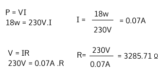

Se conoce la potencia por letra. El voltaje se deduce al ser un circuito conectado a una instalación eléctrica que en el Uruguay es de 220V o 230V (cualquiera de los dos valores se aceptan como correctos).
Explique y fundamente un posible motivo de la falla.
Se evaluará uso de vocabulario técnico para nombrar los
componentes y aplicación de conocimientos básicos de electricidad.
El cable de alimentación eléctrica está formado por tres conductores. Dos conductores en son los polos que toman valores opuestos, uno positivo y el otro negativo. Al romperse el cable estos conductores pueden entrar en contacto formando cortocircuito.
Queda un circuito que recibe aproximadamente 200V de corriente alterna, y como todo cable tiene una resistencia que tiende a ser 0. Por ley de Ohm, la intensidad será el voltaje divido la resistencia. Tendiendo la resistencia a 0, la intensidad tiende a infinito, lo cual implica que el cable se queme.